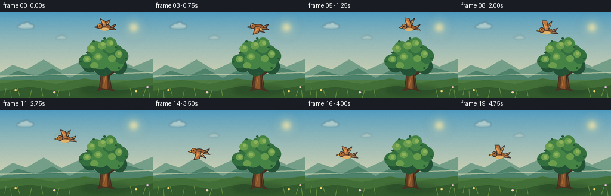
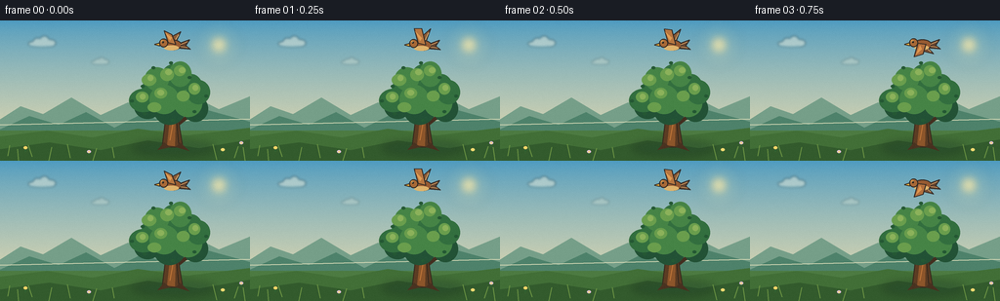

CODING AGENTS AS PIXEL WORLD MODELS
traex/GPT-5.6-Sol · dynamic_spatial_relationship_0044
点击播放 · 原生 RGB 像素
逐轮保存的候选
回放视频、检查图与代码变化。
每份候选均可单独播放。实际图片检查记录在下方工具轨迹中。
候选 01播放与检查图
点击播放 · 原生 RGB 像素

展开代码变化
--- 上一保存版本
+++ 本次保存版本
@@ -0,0 +1,265 @@
+from pathlib import Path
+import math
+import numpy as np
+from PIL import Image, ImageDraw, ImageFilter
+import artifact_io
+
+# PixelWorld RGB video generator: all imagery is procedurally drawn from the prompt.
+W, H, N = 256, 144, 20
+SS = 4
+WW, HH = W * SS, H * SS
+rng = np.random.default_rng(44)
+
+
+def S(v):
+ return int(round(v * SS))
+
+
+def pts(seq):
+ return [(S(x), S(y)) for x, y in seq]
+
+
+def lerp(a, b, t):
+ return a + (b-a)*t
+
+
+def smoothstep(t):
+ t = max(0.0, min(1.0, t))
+ return t*t*(3-2*t)
+
+
+def ellipse(draw, box, fill, outline=None, width=1):
+ draw.ellipse(tuple(S(v) for v in box), fill=fill, outline=outline, width=S(width) if outline else 1)
+
+
+def polygon(draw, xy, fill, outline=None):
+ draw.polygon(pts(xy), fill=fill)
+ if outline:
+ draw.line(pts(xy + [xy[0]]), fill=outline, width=S(1), joint='curve')
+
+
+def line(draw, xy, fill, width=1):
+ draw.line(pts(xy), fill=fill, width=S(width), joint='curve')
+
+
+def sky_gradient(frame_index):
+ top = np.array([77, 155, 193], dtype=float)
+ bottom = np.array([240, 223, 174], dtype=float)
+ arr = np.zeros((HH, WW, 3), dtype=np.uint8)
+ for yy in range(HH):
+ u = yy / max(1, HH-1)
+ # smoother, luminous dawn gradient
+ c = top*(1-u**0.78) + bottom*(u**0.78)
+ arr[yy, :, :] = np.clip(c, 0, 255).astype(np.uint8)
+ return Image.fromarray(arr, 'RGB')
+
+
+def draw_cloud(base, x, y, scale=1.0, opacity=150):
+ layer = Image.new('RGBA', (WW, HH), (0,0,0,0))
+ d = ImageDraw.Draw(layer)
+ col = (255, 247, 224, opacity)
+ shade = (207, 222, 216, opacity//3)
+ ellipse(d, (x-17*scale, y-1*scale, x+19*scale, y+5*scale), shade)
+ ellipse(d, (x-18*scale, y-4*scale, x+17*scale, y+3*scale), col)
+ ellipse(d, (x-11*scale, y-8*scale, x+1*scale, y+3*scale), col)
+ ellipse(d, (x-2*scale, y-11*scale, x+11*scale, y+3*scale), col)
+ ellipse(d, (x+6*scale, y-6*scale, x+20*scale, y+3*scale), col)
+ layer = layer.filter(ImageFilter.GaussianBlur(S(1.2)))
+ base.alpha_composite(layer)
+
+
+def draw_background(im, fi):
+ # Work on RGBA for soft light and atmospheric elements.
+ im = im.convert('RGBA')
+ d = ImageDraw.Draw(im)
+
+ # Sun glow and disc, intentionally far from the subject.
+ glow = Image.new('RGBA', (WW, HH), (0,0,0,0))
+ gd = ImageDraw.Draw(glow)
+ for r, a in [(24,10), (17,15), (11,25)]:
+ ellipse(gd, (224-r, 25-r, 224+r, 25+r), (255,230,155,a))
+ ellipse(gd, (217,18,231,32), (255,236,170,205))
+ glow = glow.filter(ImageFilter.GaussianBlur(S(4)))
+ im.alpha_composite(glow)
+
+ # Barely drifting soft clouds create life without competing with the bird.
+ draw_cloud(im, 42-fi*0.10, 24, 0.75, 105)
+ draw_cloud(im, 102-fi*0.07, 43, 0.48, 60)
+
+ d = ImageDraw.Draw(im)
+ # Distant layered hills.
+ polygon(d, [(-4,104),(21,88),(44,96),(73,79),(103,97),(131,84),(160,98),(194,76),(224,91),(260,76),(260,145),(-4,145)], (118,159,137,255))
+ polygon(d, [(-3,113),(30,98),(60,107),(88,94),(117,110),(145,96),(177,107),(209,91),(260,105),(260,145),(-3,145)], (78,130,107,255))
+ # Fine distant mist rim.
+ line(d, [(0,107),(256,101)], (218,220,184,55), 1)
+
+ # Meadow base and striped depth.
+ d.rectangle((0,S(113),WW,HH), fill=(77,123,66,255))
+ polygon(d, [(0,119),(48,113),(94,120),(141,111),(191,118),(256,110),(256,144),(0,144)], (66,111,55,255))
+ polygon(d, [(0,132),(50,125),(103,133),(151,123),(204,131),(256,122),(256,144),(0,144)], (51,91,45,255))
+
+ # Tree's broad soft cast shadow anchors it to the ground.
+ shadow = Image.new('RGBA', (WW,HH), (0,0,0,0))
+ sd = ImageDraw.Draw(shadow)
+ ellipse(sd, (135,123,220,138), (24,55,41,75))
+ shadow = shadow.filter(ImageFilter.GaussianBlur(S(4)))
+ im.alpha_composite(shadow)
+ return im
+
+
+def draw_tree(im):
+ d = ImageDraw.Draw(im)
+ # Back branches, dark outlines make the silhouette very legible.
+ line(d, [(177,126),(176,89),(162,70)], (67,49,34,255), 7)
+ line(d, [(176,98),(193,75)], (69,50,33,255), 5)
+ line(d, [(173,105),(153,87)], (75,52,34,255), 4)
+ line(d, [(180,108),(202,91)], (68,48,33,255), 4)
+
+ # Main tapered trunk.
+ polygon(d, [(166,130),(171,89),(180,87),(187,130)], (92,60,35,255), (56,42,30,255))
+ polygon(d, [(171,128),(175,91),(180,90),(179,129)], (141,86,43,255))
+ line(d, [(174,123),(179,96)], (188,116,57,180), 1)
+ line(d, [(183,127),(181,103)], (52,40,29,180), 1)
+ # Roots.
+ polygon(d, [(168,125),(161,133),(174,130)], (74,51,33,255))
+ polygon(d, [(184,125),(194,134),(180,130)], (72,49,32,255))
+
+ # Crown: dark undersides first, then middle and lit leaf clusters.
+ dark = (35,82,54,255)
+ mid = (51,111,63,255)
+ green = (70,132,70,255)
+ light = (106,158,77,255)
+ lime = (140,178,91,255)
+ clusters = [
+ (146,65,172,91,dark),(161,52,188,82,dark),(179,62,207,94,dark),
+ (137,74,165,101,dark),(157,75,190,107,dark),(187,77,213,104,dark),
+ (145,57,173,86,mid),(164,45,190,78,mid),(184,55,208,87,mid),
+ (132,70,162,94,mid),(153,66,183,96,green),(178,71,207,99,green),
+ (148,48,173,72,green),(173,42,196,68,green),(191,61,215,86,mid),
+ ]
+ for item in clusters:
+ ellipse(d, item[:4], item[4])
+ # Organic scalloped highlights.
+ for b in [(145,55,160,67),(164,49,178,62),(178,46,190,57),(193,64,205,76),
+ (139,73,152,84),(158,69,171,80),(181,72,194,83),(151,84,165,94)]:
+ ellipse(d, b, light)
+ for b in [(151,56,157,62),(169,50,176,56),(183,48,190,54),(197,66,203,72),
+ (143,75,149,81),(161,71,168,77)]:
+ ellipse(d, b, lime)
+ # Leaf notches/details.
+ for x,y in [(146,67),(157,48),(175,43),(194,58),(211,77),(199,93),(177,102),(148,95),(135,82)]:
+ ellipse(d, (x-2,y-1,x+2,y+2), (37,88,52,255))
+
+
+def draw_meadow_details(im):
+ d = ImageDraw.Draw(im)
+ # Subtle foreground grasses, all below subjects.
+ grasses = [(8,139,10,128),(19,144,18,132),(33,140,29,128),(50,144,53,130),
+ (72,141,69,127),(95,144,99,131),(117,141,115,130),(222,143,218,127),
+ (240,141,244,129),(251,144,249,130)]
+ for x1,y1,x2,y2 in grasses:
+ line(d, [(x1,y1),(x2,y2)], (105,145,67,220), 1)
+ # A few restrained flowers improve finish without introducing extra objects.
+ for x,y,c in [(26,130,(244,208,104,255)),(91,134,(229,193,215,255)),
+ (228,132,(242,215,116,255)),(247,125,(220,186,210,255))]:
+ line(d, [(x,y+5),(x,y)], (50,100,51,255), 1)
+ ellipse(d, (x-2,y-1,x+2,y+2), c)
+ ellipse(d, (x-.7,y,x+.7,y+1.4), (250,225,106,255))
+
+
+def bird_position(fi):
+ # First 1.25 seconds: bird remains unmistakably ABOVE the tree.
+ if fi <= 4:
+ return 175.0, 24.5 + 0.45*math.sin(fi*1.2), 0.0
+ # Then one smooth leftward flight, ending and holding LEFT of the tree.
+ p = smoothstep((fi-4) / 12.0)
+ x = lerp(175.0, 68.0, p)
+ y = lerp(24.5, 75.0, p) - 9.0*math.sin(math.pi*p)
+ return x, y, p
+
+
+def draw_motion_streaks(im, fi, x, y, p):
+ if fi < 6 or fi > 16:
+ return
+ layer = Image.new('RGBA', (WW,HH), (0,0,0,0))
+ d = ImageDraw.Draw(layer)
+ # Short airy streaks trail to the right, communicating leftward flight.
+ intensity = int(80 * math.sin(math.pi*min(1,max(0,(fi-5)/12))))
+ for j,dy in enumerate((-5, 4)):
+ length = 8 + 3*j
+ line(d, [(x+13,y+dy),(x+13+length,y+dy-1)], (245,244,220,max(20,intensity-15*j)), 1)
+ layer = layer.filter(ImageFilter.GaussianBlur(S(.45)))
+ im.alpha_composite(layer)
+
+
+def draw_bird(im, fi, x, y, progress):
+ layer = Image.new('RGBA', (WW, HH), (0,0,0,0))
+ d = ImageDraw.Draw(layer)
+ # Wing beat. Initial hover has slow, open wings; transit has energetic beats.
+ phase = fi * (1.75 if progress > 0 else 1.18)
+ flap = math.sin(phase)
+ outline = (51,43,38,255)
+
+ # Tail points right, the head/beak face left: direction is visually explicit.
+ polygon(d, [(x+8,y-1),(x+19,y-5),(x+15,y+1),(x+20,y+5),(x+7,y+4)], (98,68,49,255), outline)
+
+ # Far wing behind the body.
+ if flap >= 0:
+ polygon(d, [(x+4,y),(x+10,y-13-4*flap),(x-1,y-7),(x-4,y+1)], (139,91,56,255), outline)
+ line(d, [(x+3,y-2),(x+8,y-10-3*flap)], (220,163,94,220), 1)
+ else:
+ polygon(d, [(x+3,y-1),(x+13,y+8-5*flap),(x+1,y+7),(x-5,y+1)], (121,78,52,255), outline)
+ line(d, [(x+2,y+1),(x+10,y+6-4*flap)], (203,143,82,210), 1)
+
+ # Main body and pale underside.
+ ellipse(d, (x-8,y-5,x+11,y+6), (151,91,50,255), outline, 1)
+ ellipse(d, (x-7,y+1,x+8,y+6), (227,180,105,245))
+ # Distinct rounded head on the left.
+ ellipse(d, (x-12,y-6,x-3,y+3), (169,105,54,255), outline, 1)
+ ellipse(d, (x-10.5,y-4.7,x-7.4,y-1.6), (211,145,72,255))
+ # Beak points left.
+ polygon(d, [(x-11.5,y-1.5),(x-17,y+0.1),(x-11.2,y+1.5)], (235,174,60,255), outline)
+ # Eye and tiny catchlight.
+ ellipse(d, (x-9.3,y-3.4,x-7.2,y-1.3), (28,27,25,255))
+ ellipse(d, (x-8.8,y-3.1,x-8.2,y-2.5), (255,246,210,255))
+
+ # Fore wing gives a readable silhouette every frame.
+ if flap >= 0:
+ polygon(d, [(x+5,y),(x+1,y-10-7*flap),(x-7,y-14-3*flap),(x-3,y-2)], (184,119,65,255), outline)
+ polygon(d, [(x+1,y-7),(x-6,y-12-2*flap),(x-1,y-4)], (226,157,83,255))
+ else:
+ polygon(d, [(x+5,y),(x+2,y+7-8*flap),(x-7,y+11-5*flap),(x-3,y-1)], (178,111,61,255), outline)
+ polygon(d, [(x+1,y+5),(x-5,y+9-4*flap),(x-1,y+1)], (224,151,79,255))
+
+ # Very small directional feather lines.
+ line(d, [(x+10,y),(x+17,y-3)], (207,139,74,220), 1)
+ line(d, [(x+10,y+2),(x+17,y+3)], (207,139,74,220), 1)
+ im.alpha_composite(layer)
+
+
+def make_frame(fi):
+ im = draw_background(sky_gradient(fi), fi)
+ draw_tree(im)
+ draw_meadow_details(im)
+ x, y, p = bird_position(fi)
+ draw_motion_streaks(im, fi, x, y, p)
+ draw_bird(im, fi, x, y, p)
+
+ # Downsample supersampling for clean antialiased shapes and add subtle film texture.
+ im = im.convert('RGB').resize((W,H), Image.Resampling.LANCZOS)
+ arr = np.asarray(im).astype(np.int16)
+ # Fixed low-amplitude texture prevents flat vector banding while preserving clarity.
+ local_rng = np.random.default_rng(4400 + fi)
+ grain = local_rng.normal(0, 0.75, arr.shape[:2])[:, :, None]
+ arr = np.clip(arr + grain, 0, 255).astype(np.uint8)
+ return arr
+
+
+def main():
+ frames = np.stack([make_frame(i) for i in range(N)], axis=0)
+ assert frames.shape == (20,144,256,3) and frames.dtype == np.uint8
+ artifact_io.save(frames, Path(__file__).resolve().parent)
+
+
+if __name__ == '__main__':
+ main()
候选 02播放与检查图
点击播放 · 原生 RGB 像素


展开代码变化
--- 上一保存版本
+++ 本次保存版本
@@ -51,7 +51,7 @@
# smoother, luminous dawn gradient
c = top*(1-u**0.78) + bottom*(u**0.78)
arr[yy, :, :] = np.clip(c, 0, 255).astype(np.uint8)
- return Image.fromarray(arr, 'RGB')
+ return Image.fromarray(arr)
def draw_cloud(base, x, y, scale=1.0, opacity=150):
可观测工具轨迹
实际执行的命令与返回图片。
命令 1exit 0
/bin/bash -lc "cat prompt.txt && printf '\\n---RULES---\\n' && cat GENERATION_RULES.md && printf '\\n---SPEC---\\n' && cat task_spec.json"
命令 2exit 1
/bin/bash -lc "find . -maxdepth 2 -type f -printf '%p\\n' | sort && printf '\\nTOOLS\\n' && command -v ffmpeg && command -v python3 && python3 - <<'PY' mods=['PIL','numpy','cv2','cairo','imageio'] for m in mods: try: x=__import__(m); print(m,'OK',getattr(x,'__version__','')) except Exception as e: print(m,'NO',e) PY"
命令 3exit 0
/bin/bash -lc 'cat artifact_io.py'
命令 4exit 0
/bin/bash -lc 'for x in python3 ffmpeg convert; do printf "$x: "; command -v "$x" || true; done python3 - <<'"'PY' mods=['PIL','numpy','cv2','imageio'] for m in mods: try: x=__import__(m); print(m,'OK',getattr(x,'__version__','')) except Exception as e: print(m,'NO',e) PY"
命令 5exit 2
/bin/bash -lc "cat > generate.py <<'PY'
from pathlib import Path
import math
import numpy as np
from PIL import Image, ImageDraw, ImageFilter
import artifact_io
# PixelWorld RGB video generator: all imagery is procedurally drawn from the prompt.
W, H, N = 256, 144, 20
SS = 4
WW, HH = W * SS, H * SS
rng = np.random.default_rng(44)
def S(v):
return int(round(v * SS))
def pts(seq):
return [(S(x), S(y)) for x, y in seq]
def lerp(a, b, t):
return a + (b-a)*t
def smoothstep(t):
t = max(0.0, min(1.0, t))
return t*t*(3-2*t)
def ellipse(draw, box, fill, outline=None, width=1):
draw.ellipse(tuple(S(v) for v in box), fill=fill, outline=outline, width=S(width) if outline else 1)
def polygon(draw, xy, fill, outline=None):
draw.polygon(pts(xy), fill=fill)
if outline:
draw.line(pts(xy + [xy[0]]), fill=outline, width=S(1), joint='curve')
def line(draw, xy, fill, width=1):
draw.line(pts(xy), fill=fill, width=S(width), joint='curve')
def sky_gradient(frame_index):
top = np.array([77, 155, 193], dtype=float)
bottom = np.array([240, 223, 174], dtype=float)
arr = np.zeros((HH, WW, 3), dtype=np.uint8)
for yy in range(HH):
u = yy / max(1, HH-1)
# smoother, luminous dawn gradient
c = top*(1-u**0.78) + bottom*(u**0.78)
arr[yy, :, :] = np.clip(c, 0, 255).astype(np.uint8)
return Image.fromarray(arr, 'RGB')
def draw_cloud(base, x, y, scale=1.0, opacity=150):
layer = Image.new('RGBA', (WW, HH), (0,0,0,0))
d = ImageDraw.Draw(layer)
col = (255, 247, 224, opacity)
shade = (207, 222, 216, opacity//3)
ellipse(d, (x-17*scale, y-1*scale, x+19*scale, y+5*scale), shade)
ellipse(d, (x-18*scale, y-4*scale, x+17*scale, y+3*scale), col)
ellipse(d, (x-11*scale, y-8*scale, x+1*scale, y+3*scale), col)
ellipse(d, (x-2*scale, y-11*scale, x+11*scale, y+3*scale), col)
ellipse(d, (x+6*scale, y-6*scale, x+20*scale, y+3*scale), col)
layer = layer.filter(ImageFilter.GaussianBlur(S(1.2)))
base.alpha_composite(layer)
def draw_background(im, fi):
# Work on RGBA for soft light and atmospheric elements.
im = im.convert('RGBA')
d = ImageDraw.Draw(im)
# Sun glow and disc, intentionally far from the subject.
glow = Image.new('RGBA', (WW, HH), (0,0,0,0))
gd = ImageDraw.Draw(glow)
for r, a in [(24,10), (17,15), (11,25)]:
ellipse(gd, (224-r, 25-r, 224+r, 25+r), (255,230,155,a))
ellipse(gd, (217,18,231,32), (255,236,170,205))
glow = glow.filter(ImageFilter.GaussianBlur(S(4)))
im.alpha_composite(glow)
# Barely drifting soft clouds create life without competing with the bird.
draw_cloud(im, 42-fi*0.10, 24, 0.75, 105)
draw_cloud(im, 102-fi*0.07, 43, 0.48, 60)
d = ImageDraw.Draw(im)
# Distant layered hills.
polygon(d, [(-4,104),(21,88),(44,96),(73,79),(103,97),(131,84),(160,98),(194,76),(224,91),(260,76),(260,145),(-4,145)], (118,159,137,255))
polygon(d, [(-3,113),(30,98),(60,107),(88,94),(117,110),(145,96),(177,107),(209,91),(260,105),(260,145),(-3,145)], (78,130,107,255))
# Fine distant mist rim.
line(d, [(0,107),(256,101)], (218,220,184,55), 1)
# Meadow base and striped depth.
d.rectangle((0,S(113),WW,HH), fill=(77,123,66,255))
polygon(d, [(0,119),(48,113),(94,120),(141,111),(191,118),(256,110),(256,144),(0,144)], (66,111,55,255))
polygon(d, [(0,132),(50,125),(103,133),(151,123),(204,131),(256,122),(256,144),(0,144)], (51,91,45,255))
# Tree's broad soft cast shadow anchors it to the ground.
shadow = Image.new('RGBA', (WW,HH), (0,0,0,0))
sd = ImageDraw.Draw(shadow)
ellipse(sd, (135,123,220,138), (24,55,41,75))
shadow = shadow.filter(ImageFilter.GaussianBlur(S(4)))
im.alpha_composite(shadow)
return im
def draw_tree(im):
d = ImageDraw.Draw(im)
# Back branches, dark outlines make the silhouette very legible.
line(d, [(177,126),(176,89),(162,70)], (67,49,34,255), 7)
line(d, [(176,98),(193,75)], (69,50,33,255), 5)
line(d, [(173,105),(153,87)], (75,52,34,255), 4)
line(d, [(180,108),(202,91)], (68,48,33,255), 4)
# Main tapered trunk.
polygon(d, [(166,130),(171,89),(180,87),(187,130)], (92,60,35,255), (56,42,30,255))
polygon(d, [(171,128),(175,91),(180,90),(179,129)], (141,86,43,255))
line(d, [(174,123),(179,96)], (188,116,57,180), 1)
line(d, [(183,127),(181,103)], (52,40,29,180), 1)
# Roots.
polygon(d, [(168,125),(161,133),(174,130)], (74,51,33,255))
polygon(d, [(184,125),(194,134),(180,130)], (72,49,32,255))
# Crown: dark undersides first, then middle and lit leaf clusters.
dark = (35,82,54,255)
mid = (51,111,63,255)
green = (70,132,70,255)
light = (106,158,77,255)
lime = (140,178,91,255)
clusters = [
(146,65,172,91,dark),(161,52,188,82,dark),(179,62,207,94,dark),
(137,74,165,101,dark),(157,75,190,107,dark),(187,77,213,104,dark),
(145,57,173,86,mid),(164,45,190,78,mid),(184,55,208,87,mid),
(132,70,162,94,mid),(153,66,183,96,green),(178,71,207,99,green),
(148,48,173,72,green),(173,42,196,68,green),(191,61,215,86,mid),
]
for b, c in clusters:
ellipse(d, b, c)
# Organic scalloped highlights.
for b in [(145,55,160,67),(164,49,178,62),(178,46,190,57),(193,64,205,76),
(139,73,152,84),(158,69,171,80),(181,72,194,83),(151,84,165,94)]:
ellipse(d, b, light)
for b in [(151,56,157,62),(169,50,176,56),(183,48,190,54),(197,66,203,72),
(143,75,149,81),(161,71,168,77)]:
ellipse(d, b, lime)
# Leaf notches/details.
for x,y in [(146,67),(157,48),(175,43),(194,58),(211,77),(199,93),(177,102),(148,95),(135,82)]:
ellipse(d, (x-2,y-1,x+2,y+2), (37,88,52,255))
def draw_meadow_details(im):
d = ImageDraw.Draw(im)
# Subtle foreground grasses, all below subjects.
grasses = [(8,139,10,128),(19,144,18,132),(33,140,29,128),(50,144,53,130),
(72,141,69,127),(95,144,99,131),(117,141,115,130),(222,143,218,127),
(240,141,244,129),(251,144,249,130)]
for x1,y1,x2,y2 in grasses:
line(d, [(x1,y1),(x2,y2)], (105,145,67,220), 1)
# A few restrained flowers improve finish without introducing extra objects.
for x,y,c in [(26,130,(244,208,104,255)),(91,134,(229,193,215,255)),
(228,132,(242,215,116,255)),(247,125,(220,186,210,255))]:
line(d, [(x,y+5),(x,y)], (50,100,51,255), 1)
ellipse(d, (x-2,y-1,x+2,y+2), c)
ellipse(d, (x-.7,y,x+.7,y+1.4), (250,225,106,255))
def bird_position(fi):
# First 1.25 seconds: bird remains unmistakably ABOVE the tree.
if fi <= 4:
return 175.0, 24.5 + 0.45*math.sin(fi*1.2), 0.0
# Then one smooth leftward flight, ending and holding LEFT of the tree.
p = smoothstep((fi-4) / 12.0)
x = lerp(175.0, 68.0, p)
y = lerp(24.5, 75.0, p) - 9.0*math.sin(math.pi*p)
return x, y, p
def draw_motion_streaks(im, fi, x, y, p):
if fi < 6 or fi > 16:
return
layer = Image.new('RGBA', (WW,HH), (0,0,0,0))
d = ImageDraw.Draw(layer)
# Short airy streaks trail to the right, communicating leftward flight.
intensity = int(80 * math.sin(math.pi*min(1,max(0,(fi-5)/12))))
for j,dy in enumerate((-5, 4)):
length = 8 + 3*j
line(d, [(x+13,y+dy),(x+13+length,y+dy-1)], (245,244,220,max(20,intensity-15*j)), 1)
layer = layer.filter(ImageFilter.GaussianBlur(S(.45)))
im.alpha_composite(layer)
def draw_bird(im, fi, x, y, progress):
layer = Image.new('RGBA', (WW, HH), (0,0,0,0))
d = ImageDraw.Draw(layer)
# Wing beat. Initial hover has slow, open wings; transit has energetic beats.
phase = fi * (1.75 if progress > 0 else 1.18)
flap = math.sin(phase)
outline = (51,43,38,255)
# Tail points right, the head/beak face left: direction is visually explicit.
polygon(d, [(x+8,y-1),(x+19,y-5),(x+15,y+1),(x+20,y+5),(x+7,y+4)], (98,68,49,255), outline)
# Far wing behind the body.
if flap >= 0:
polygon(d, [(x+4,y),(x+10,y-13-4*flap),(x-1,y-7),(x-4,y+1)], (139,91,56,255), outline)
line(d, [(x+3,y-2),(x+8,y-10-3*flap)], (220,163,94,220), 1)
else:
polygon(d, [(x+3,y-1),(x+13,y+8-5*flap),(x+1,y+7),(x-5,y+1)], (121,78,52,255), outline)
line(d, [(x+2,y+1),(x+10,y+6-4*flap)], (203,143,82,210), 1)
# Main body and pale underside.
ellipse(d, (x-8,y-5,x+11,y+6), (151,91,50,255), outline, 1)
ellipse(d, (x-7,y+1,x+8,y+6), (227,180,105,245))
# Distinct rounded head on the left.
ellipse(d, (x-12,y-6,x-3,y+3), (169,105,54,255), outline, 1)
ellipse(d, (x-10.5,y-4.7,x-7.4,y-1.6), (211,145,72,255))
# Beak points left.
polygon(d, [(x-11.5,y-1.5),(x-17,y+0.1),(x-11.2,y+1.5)], (235,174,60,255), outline)
# Eye and tiny catchlight.
ellipse(d, (x-9.3,y-3.4,x-7.2,y-1.3), (28,27,25,255))
ellipse(d, (x-8.8,y-3.1,x-8.2,y-2.5), (255,246,210,255))
# Fore wing gives a readable silhouette every frame.
if flap >= 0:
polygon(d, [(x+5,y),(x+1,y-10-7*flap),(x-7,y-14-3*flap),(x-3,y-2)], (184,119,65,255), outline)
polygon(d, [(x+1,y-7),(x-6,y-12-2*flap),(x-1,y-4)], (226,157,83,255))
else:
polygon(d, [(x+5,y),(x+2,y+7-8*flap),(x-7,y+11-5*flap),(x-3,y-1)], (178,111,61,255), outline)
polygon(d, [(x+1,y+5),(x-5,y+9-4*flap),(x-1,y+1)], (224,151,79,255))
# Very small directional feather lines.
line(d, [(x+10,y),(x+17,y-3)], (207,139,74,220), 1)
line(d, [(x+10,y+2),(x+17,y+3)], (207,139,74,220), 1)
im.alpha_composite(layer)
def make_frame(fi):
im = draw_background(sky_gradient(fi), fi)
draw_tree(im)
draw_meadow_details(im)
x, y, p = bird_position(fi)
draw_motion_streaks(im, fi, x, y, p)
draw_bird(im, fi, x, y, p)
# Downsample supersampling for clean antialiased shapes and add subtle film texture.
im = im.convert('RGB').resize((W,H), Image.Resampling.LANCZOS)
arr = np.asarray(im).astype(np.int16)
# Fixed low-amplitude texture prevents flat vector banding while preserving clarity.
local_rng = np.random.default_rng(4400 + fi)
grain = local_rng.normal(0, 0.75, arr.shape[:2])[:, :, None]
arr = np.clip(arr + grain, 0, 255).astype(np.uint8)
return arr
def main():
frames = np.stack([make_frame(i) for i in range(N)], axis=0)
assert frames.shape == (20,144,256,3) and frames.dtype == np.uint8
artifact_io.save(frames, Path(__file__).resolve().parent)
if __name__ == '__main__':
main()
PY
python3 generate.py
ls -lh pixels.npz inspection.png transition_check.png index.html frames/00.png frames/19.png"命令 6exit 0
/bin/bash -lc "python3 generate.py && ls -lh pixels.npz inspection.png transition_check.png index.html frames/00.png frames/19.png && python3 - <<'PY'
import numpy as np
from PIL import Image
z=np.load('pixels.npz')['pixels']
print('pixels',z.shape,z.dtype,'range',z.min(),z.max())
ims=np.stack([np.array(Image.open(f'frames/{i:02d}.png')) for i in range(20)])
print('frames',ims.shape,ims.dtype,'mean abs frame deltas',np.abs(np.diff(ims.astype(float),axis=0)).mean(axis=(1,2,3)).round(3).tolist())
PY"命令 7exit 0
/bin/bash -lc "python3 generate.py && python3 - <<'PY'
from pathlib import Path
import numpy as np
from PIL import Image
files=[Path(f'frames/{i:02d}.png') for i in range(20)]
a=np.stack([np.asarray(Image.open(p)) for p in files])
assert a.shape==(20,144,256,3) and a.dtype==np.uint8
assert Path('pixels.npz').is_file() and Path('index.html').is_file()
# Validate regenerated packed artifact against source frame pixels.
p=np.load('pixels.npz')['pixels']
r=((p>>16)&255).transpose(2,0,1)
g=((p>>8)&255).transpose(2,0,1)
b=(p&255).transpose(2,0,1)
re=np.stack([r,g,b],axis=-1).astype(np.uint8)
assert np.array_equal(a,re)
print('PASS: 20 RGB frames, 256x144, packed artifact verified')
print('output bytes:',Path('pixels.npz').stat().st_size)
PY"保存候选 2 份；完成命令 7 次；可验证图片返回 0 张。原始 API 响应与完整日志保留在本地。